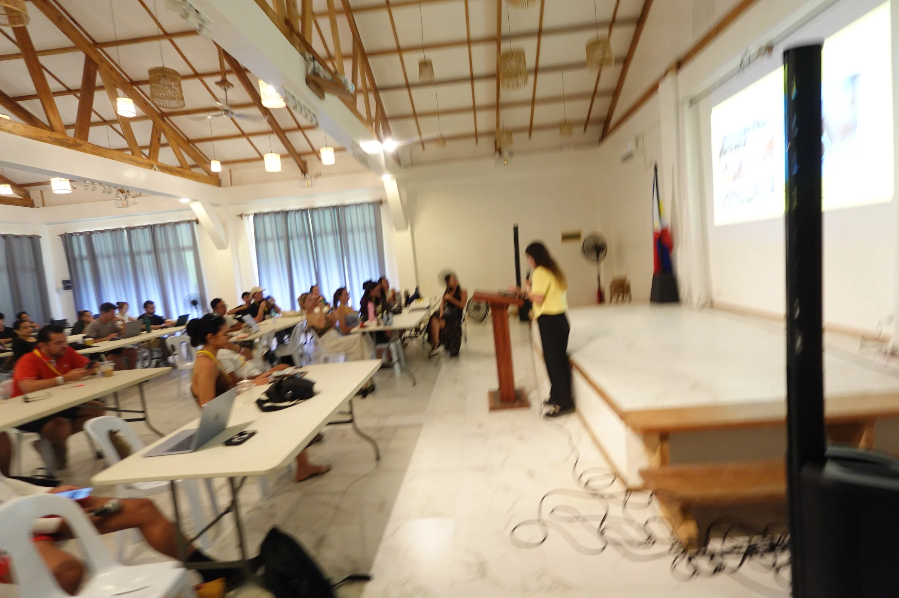
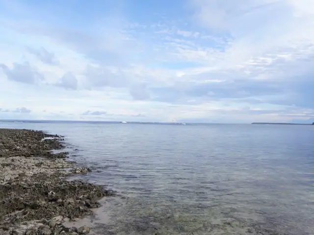
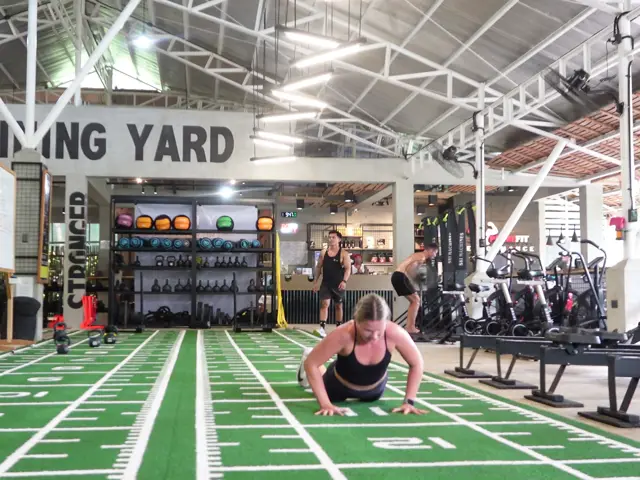
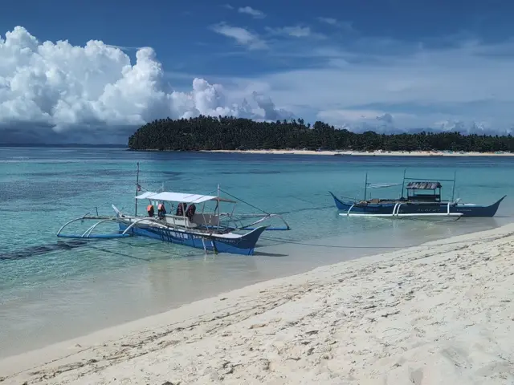
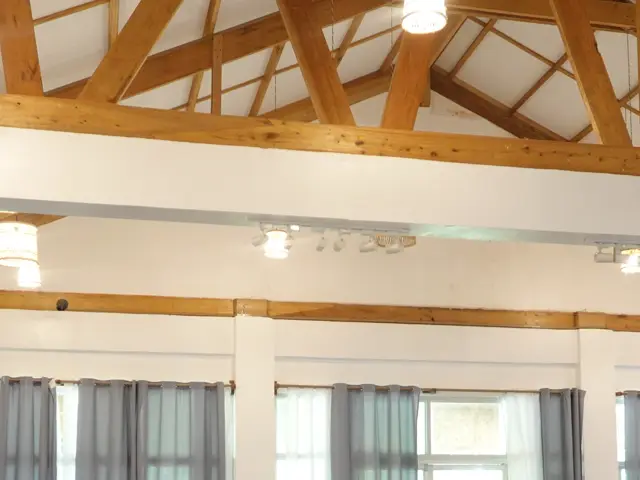
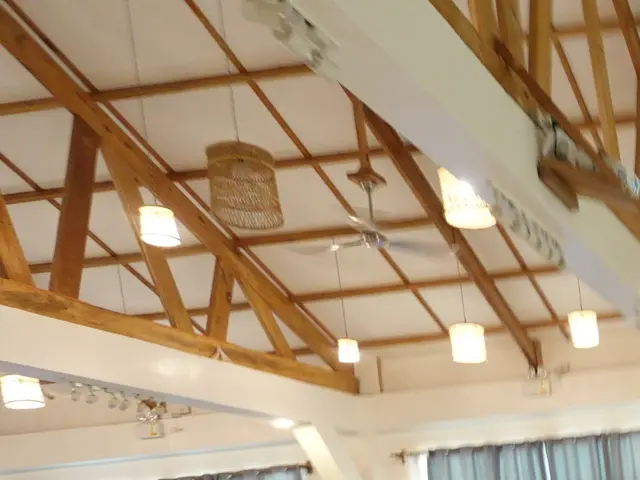
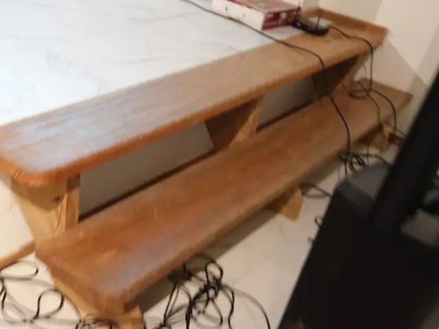
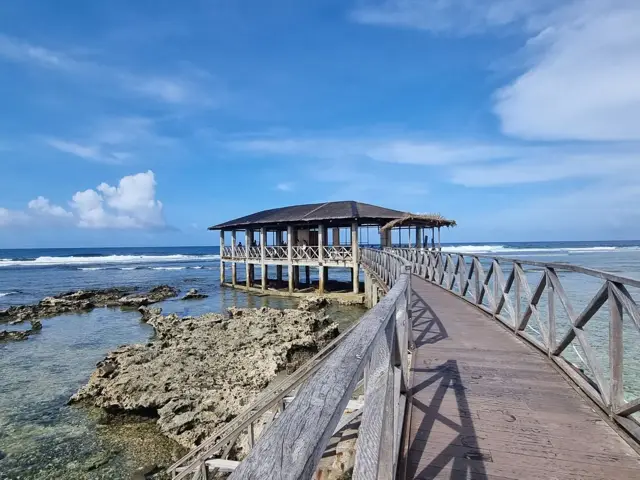

01
Daily recap video
A short video of each day, so the people who could not be there still feel it.
Events · KhunShawn
KhunShawn and his crew film, edit and post events for organizers and the founders attending them. 2026 so far: the on-site media team at Nomads in Paradise in Siargao (Oct 16 to 25), and videography and interviews at Da Nang Nomad Fest.

What we deliver
A short video of each day, so the people who could not be there still feel it.
Short on-camera conversations with the founders and business owners at the event.
Photos from the talks and the floor, handed to the organizers and the people in them.
Cut for Reels, TikTok and Shorts, ready to post while the event is still on.
One reel at the end that pulls the whole event together.
How it works
Our crew is at the event, filming as it happens.
Footage goes into a shared folder the same night.
The first edits go out within 48 hours.

The film
Da Nang, Vietnam
Videography and interviews with the content team at Da Nang Nomad Fest. These are the words of the people who worked with KhunShawn there.
 ★ On the record
★ On the record"Shawn brought a powerful mix of creativity, initiative, and leadership to the content team at Da Nang Nomad Fest."
"The footage and audio turned out beautifully and really captured the feeling of the event."
Proof
We were on site at Siargao Nomad Fest, Oct 16 to 25, 2026. Here is the work.

Day 01Oct 16Opening night by the water✓ Recap live
Day 02Oct 17Yoga and a Hyrox-style workout✓ Recap live
Day 03Oct 18Island hopping day✓ Recap live Day 04Oct 19Conference day at Isola Del Sole✓ Recap live
Day 04Oct 19Conference day at Isola Del Sole✓ Recap live

Day 05Oct 20Conference day two: work, health and money✓ Recap live
Day 06Oct 21Conference day three: content, money and remote work✓ Recap live
Day 07Oct 22The last conference day, then Unconferences✓ Recap live Day 08Oct 23Wellness Day: sunrise yoga to a pool party✓ Recap live
Day 08Oct 23Wellness Day: sunrise yoga to a pool party✓ Recap live
 Day 09Oct 24Beach day: island trips, a tournament and a foam party✓ Recap live
Day 09Oct 24Beach day: island trips, a tournament and a foam party✓ Recap live

Day 10Oct 25Closing day: one last island trip and the Closing Party✓ Recap liveThe festival hub: every day, one recap.
Siargao Nomad Fest opened on Friday, Oct 16 with an opening party by the water. Our crew was filming from the start.
Saturday, Oct 17 was the fitness day at Siargao Nomad Fest: a yoga class at a local studio and a Hyrox-style session at a local gym.
Sunday, Oct 18 was island-hopping day at Siargao Nomad Fest: a boat out of General Luna, a white-sand beach and lunch on the sand.
Monday, Oct 19 was the first conference day at Siargao Nomad Fest, with talks on AI and building a business. Shawn spoke at 10:00.
Tuesday, Oct 20 was the second conference day at Siargao Nomad Fest, with talks on travel, work-life balance, health and money.
Wednesday, Oct 21 was the third conference day at Siargao Nomad Fest, with talks on content, investing and working across cultures.
Thursday, Oct 22 was the last conference day at Siargao Nomad Fest, with morning talks and an afternoon of Unconferences.
Friday, Oct 23 was Wellness Day at Siargao Nomad Fest: sunrise yoga, a beach sports day, an ice bath and a pool party.
Saturday, Oct 24 was the beach day at Siargao Nomad Fest: optional island trips, a morning tournament, a biohacking night and a foam party.
Sunday, Oct 25 was the final day of Nomads in Paradise 2026 in Siargao, with optional island trips and the Closing Party.
Running a nomad festival or a founder event? Tell us the event and the dates and we will come back with how we would cover it.
Book us for your event →For attendees
Sign up for your free festival photos while the form is open. The sign-up button appears here from Oct 16 to Oct 31, and the festival page has the latest.
Questions
KhunShawn's crew is the on-site media team at Nomads in Paradise Siargao 2026, Oct 16 to 25. A 5-person crew films daily recaps, interviews and speaker photos.
Daily recap videos, founder interviews, photos, and vertical clips for Reels, TikTok and Shorts, plus a best-of reel at the end.
Footage is uploaded the same night and first edits go out within 48 hours.
Yes. KhunShawn and his crew work across Southeast Asia, including Vietnam and Thailand.
Use the inquiry form on the Brands page at khuncamp.com/brands and mention the event and dates.
Attendees of Siargao Nomad Fest can sign up for free festival photos through the form on khuncamp.com/siargao.